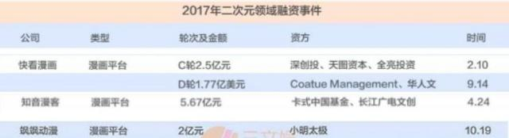
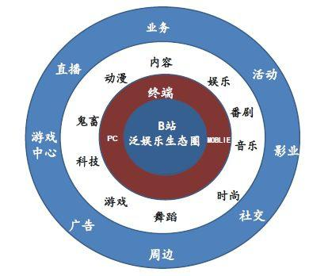
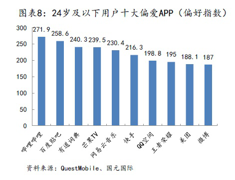
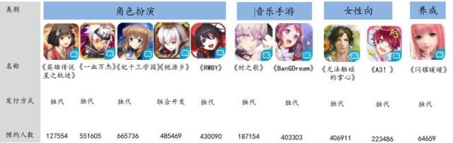
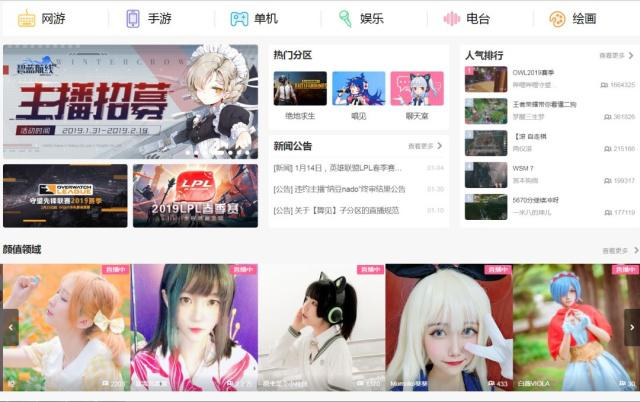
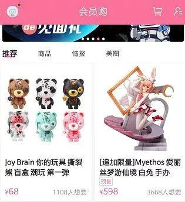
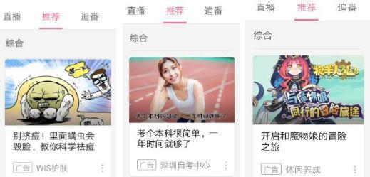

二次元市场又搞大事啦！
2月14日晚，淘宝中国宣布入股视频网站哔哩哔哩（B站）近2400万股, 持股比例占B站总股本约8%。二次元市场在资本运作领域再下一城，当天B站股价逆市上涨约4%！
那位问了，二次元是啥？二次元市场又是啥？
也不怪你不明白，实在是这世界变化快。今天你对二次元文化爱搭不理，明天它可能让你高攀不起！坐拥超级流量、无数拥趸的二次元市场，很可能成为下一个超级热点。
资本前赴后继
二次元，来自于日语的“二次元（にじげん）”，意思是“二维”，在日本的动画爱好者中指动画、游戏等作品中的角色。相对而言“三次元（さんじげん）”就指代现实中的人物。
随着ACG（Animation动画、Comic漫画、Game游戏）文化的发展，二次元开始泛指动画、漫画、游戏、小说、虚拟偶像、部分电影、部分电视剧以及其衍生同人创作及周边产品等，二次元市场也围绕着这些亚文化产品逐渐发展壮大，二次元生态也逐渐成熟，用户粘性也越来越高。
当前一些二次元主要网站
除了淘宝中国入股哔哩哔哩这样的标志性事件外，资本市场上，二次元市场早已被资本视为“香饽饽”。
据DoNews不完全统计，截至2017年末，国内已有93家二次元向公司获得了100次投资，总金额近40亿元，其中40家企业披露了估值信息，估值总额达140.92亿元。

主要二次元平台2017年融资规模，数据来源：三文娱
除了B站这种二次元的王者，其他公司也让资本欲罢不能。比如，动漫制作公司玄机科技、漫画平台快看漫画、二次元音乐公司米漫，估值分别为：30亿元、15亿元、7亿元。
商业化进度飞快
刚刚过去的情人节之夜，淘宝与B站高调秀恩爱，进一步点燃了二次元市场的活力。
从经济日报记者了解的情况看，淘宝入股B站，剑指二次元市场的商业化！

图片来源：国元国际
淘宝方面表示，很快，B站上一大批拥有百万粉丝的优质原生UP主（内容创造者）将加速入驻淘宝。在淘宝二次元平台上，UP主们将通过与自身特点相契合的产品联名、相关周边衍生品开发等多种方式，为自己的内容能力找到最适合的商业化场景。
来自B站的消息也称，目前马上临近寒假后的开学季，在淘宝二次元的对接下，B站的UP主正筹划与一系列文具、文创商品联动，为粉丝带去更好玩、有创意的开学装备。
据不完全统计，如今二次元文化的人气高涨，淘宝上泛二次元人群已经过亿。而B站已成为最受年轻人偏爱的App之一，其活跃用户量和用户粘度令资本垂涎三尺。


B站的弹幕视频，被用户戏称为“看不见脸的才是好视频”
对于B站和淘宝来说，以二次元作为突破口进行商业变现，除了对市场的看好之外，也有更深的“小算盘”：
B站2018年第三季度财报显示，B站的收入结构仍然相对单一，游戏业务贡献了主要收入。尽管其月均活跃用户高达9270万，日均使用时长85分钟，但巨大的流量和粘性依然需要转化为真金白银的“出口”，毕竟从整体上看，B站最新一季度的亏损幅度仍在加大。
淘宝方面，UP主的原创能力能为淘宝电商产品在研发、营销等各个环节提供内容支持；B站在游戏、动漫等方面手握的版权也为衍生品开发提供“弹药”。
变现玩法繁多
有人又要问了，说了这么多，利用二次元文化如何变现呢？其实，虽然现在的盈利模式较为单一，但二次元的变现手段也期待着在更多渠道上有所斩获――
游戏产品
以B站为例，自2014年尝试利用游戏变现以来，成功帮助多款精品手游进行推广及运营。2017年总计上线联运游戏55款，2018年一季度游戏付费用户82.9万人，付费用户渗透大幅提升至1%左右。

B站部分热门游戏，来源：国元国际研报
比如借由B站平台中大量的“Fate系列”动漫粉丝，其独立代理的《FGO》手游在2018年第一季度手游收入榜中排名基本在前十以内，拥超过5亿元的流水。
直播互动
网络直播的火爆也在二次元世界掀起高潮。
比如B站的直播分为三大板块：娱乐、游戏、绘画。并且打造了一大批ACG二次元类型的主播。

B站的直播页面，满眼都是二次元萌妹子主播
直播过程中用户可以发送弹幕与主播进行实时交流，用户通过金瓜子购买虚拟物品或开通特权提升粉丝之间及与主播的亲密度，给主播、UP主及平台带来收入。
内容电商
电商变现，已经成了各类社区平台的标配，二次元的电商变现也不落人后。
继快手和有赞合作、抖音上线店铺功能之后，B站也推出了店铺平台的功能。现在一边看视频刷弹幕，一边下单买东西，也成为一种新生态。

同时，由于二次元产品的特色分明，用户向来以“高黏性，高时长，高留存率”的数据示人，对UP主而言，这意味着相当大的变现空间，因此二次元电商的转换率更高，也更能达到垂直消费的目的。

B站上的网购商品
广告
广告向来是网络门户以及社区平台变现的传统方式。
二次元网站也根据自身定位和平台优势，开发出自己的信息流广告系统。

B站上的信息流广告。
以B站为例，结合用户属性，其手游、教育、写真摄影、电商、美妆护肤的广告业务空间巨大。还会根据用户兴趣来推送相关内容，实现精准投放。
相关搜索